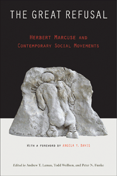

<body bgcolor="#FFFFFF" text="#000000" link="#0000FF" vlink="#CC0000" alink="#CC0000"><center><hr width="350" size="1" align="center" noshade>An in-depth examination of the relevance of Marcuse's writing for today's social movements<hr width="350" size="1" align="center" noshade><p><a href="https://cdcshoppingcart.uchicago.edu/Cart/ChicagoBook.aspx?ISBN=&&PRESS=temple" target="_top">Buy this book!</a> | <a href="https://cdcshoppingcart.uchicago.edu/Cart/Cart.aspx?PRESS=temple" target="_top">View Cart</a> | <a href="https://cdcshoppingcart.uchicago.edu/Cart/Cart.aspx?PRESS=temple" target="_top">Check Out</a></p><p></p></center><!--none//--><h1 class = "booktitle">The Great Refusal</h1> <h1 class = "subtitle">Herbert Marcuse and Contemporary Social Movements</h1>
<h3>Edited by Andrew T. Lamas, Todd Wolfson, and Peter N. Funke</h3>
paper: $44.95, Nov 16<BR>EAN:&nbsp;978-1-4399-1304-8<BR><font color=#990033>Available</FONT><font size=-7><br>&nbsp;</font></p><p class="info">cloth: $99.50, Nov 16<BR>EAN:&nbsp;978-1-4399-1303-1<BR><font color=#990033>Available</FONT><font size=-7><br>&nbsp;</font></p><p class="info">e-book: $44.95, Nov 16<BR>EAN:&nbsp;978-1-4399-1305-5<BR><font color=#990033>Available</FONT><font size=-7><br>&nbsp;</font></p></p></td></tr></table>
<BR> <p class="info">440 pp<BR> 6 x 9<BR> <p class="info"><font size=-7>&nbsp;</font></p><p class="info">
</P><BLOCKQUOTE><p>
"<i>This is certainly the time for a Marcuse revival!</i>"-<b>Fredric Jameson</b>, Knut Schmidt-Nielsen Professor of Comparative Literature, Duke University
<br></BLOCKQUOTE>
<p>
Herbert Marcuse examined the subjective and material conditions of radical social change and developed the "Great Refusal," a radical concept of "the protest against that which is." The editors and contributors to the exciting new volume <i>The Great Refusal</i> provide an analysis of contemporary social movements around the world with particular reference to Marcuse's revolutionary concept. The book also engages-and puts Marcuse in critical dialogue with-major theorists including Slavoj &#381;i&#382;ek and Michel Foucault, among others.
<br /><i>
<br /></i>The chapters in this book analyze different elements and locations of the contemporary wave of struggle, drawing on the work and vision of Marcuse in order to reveal, with a historical perspective, the present moment of resistance. Essays seek to understand recent uprisings-such as the Zapatistas in Mexico, the Arab Spring, and the Occupy movement-in the context of Marcuse's powerful conceptual apparatus.<br>
<p><i>The Great Refusal </i>also charts contemporary social movements against global warming, mass incarceration, police brutality, white supremacy, militarization, technological development, and more, to provide insights that advance our understanding of resistance today.<br>
<p><i>Contributors include: Kevin B. Anderson, Stanley Aronowitz, Joan Braune, Jenny Chan, Angela Y. Davis, Arnold L. Farr, Andrew Feenberg, Michael Forman, Christian Fuchs, Stefan Gandler, Christian Garland, Toorjo Ghose, Imaculada Kangussu, George Katsiaficas, Douglas Kellner, Sarah Lynn Kleeb, Filip Kovacevic, Lauren Langman, Heather Love, Peter Marcuse, Martin J. Beck Matu&scaron;t&#237;k, Russell Rockwell, AK Thompson, Marcelo Vieta, and the editors</i>
<br>
<P CLASS="top"><A HREF="#top">BACK TO TOP</A></P>&nbsp;<h2 class="inpageheading"><A NAME="excerpt"></a>Excerpt</h2><p>
Read the Chapter 1 (pdf).
<br>
<P CLASS="top"><A HREF="#top">BACK TO TOP</A></P>
<BR>&nbsp;
<h2 class="inpageheading"><A NAME="reviews"></a>Reviews</h2>
<p>
<b>"</b><i>One of the great 20th century critical theorists of domination and liberation, Herbert Marcuse has an enormous amount to say to our time.&nbsp;</i>The Great Refusal<i>&nbsp;makes this abundantly clear. The contributors draw Marcuse's imaginative reworking of Hegel, Marx, Freud, and Weber into illuminating conversations with a diverse range of contemporary theorists and political movements. . .from those of the Zapatistas and Chinese factory workers to the Arab Spring and Occupy. This book is a treasure trove for scholars and activists alike.</i>"-<b>Wendy Brown</b>,&nbsp;University of California, Berkeley
<br>
<P CLASS="top"><A HREF="#top">BACK TO TOP</A></P>&nbsp;<P>
<h2 class="inpageheading"><A NAME="contents"></a>Contents</h2><P><SPAN STYLE="font-family: 'Verdana';font-size: 13px;color: #231F20;" >Foreword: Abolition and Refusal &bull; </SPAN><SPAN STYLE="font-family: 'Verdana';font-size: 13px;color: #231F20;font-style:italic;" > Angela&#8199;Y.&#8199;Davis&#8199;<BR></SPAN><SPAN STYLE="font-family: 'Verdana';font-size: 13px;color: #231F20;" >Acknowledgments<BR></SPAN><SPAN STYLE="font-family: 'Verdana';font-size: 13px;color: #211D1E;" ><BR>1. Bouazizi's Refusal and Ours: Critical Reflections on the Great Refusal and Contemporary Social Movements &bull; </SPAN><SPAN STYLE="font-family: 'Verdana';font-size: 13px;color: #211D1E;font-style:italic;" >Peter N. Funke, Andrew T. Lamas, and Todd Wolfson <BR></SPAN><SPAN STYLE="font-family: 'Verdana';font-size: 13px;color: #211D1E;" ><BR></SPAN><SPAN STYLE="font-family: 'Verdana';font-size: 13px;color: #211D1E;font-weight: bold;" >PART I MAPPING COORDINATES </SPAN><SPAN STYLE="font-family: 'Verdana';font-size: 13px;color: #211D1E;" ><BR>2. Marcuse in the Crisis of Neoliberal Capitalism: Revisiting the Occupation &bull; </SPAN><SPAN STYLE="font-family: 'Verdana';font-size: 13px;color: #211D1E;font-style:italic;" >Michael Forman</SPAN><SPAN STYLE="font-family: 'Verdana';font-size: 13px;color: #211D1E;" ><BR>3. Negating That Which Negates Us: Marcuse, Critical Theory, and the New Politics of Refusal &bull; </SPAN><SPAN STYLE="font-family: 'Verdana';font-size: 13px;color: #211D1E;font-style:italic;" >Christian Garland</SPAN><SPAN STYLE="font-family: 'Verdana';font-size: 13px;color: #211D1E;" ><BR>4. Occupying and Refusing Radically: The Deprived and the Dissatisfied Transforming the World &bull; </SPAN><SPAN STYLE="font-family: 'Verdana';font-size: 13px;color: #211D1E;font-style:italic;" >Peter Marcuse<BR></SPAN><SPAN STYLE="font-family: 'Verdana';font-size: 13px;color: #211D1E;" ><BR></SPAN><SPAN STYLE="font-family: 'Verdana';font-size: 13px;color: #211D1E;font-weight: bold;" >PART II LIBERATING RESISTANCE </SPAN><SPAN STYLE="font-family: 'Verdana';font-size: 13px;color: #211D1E;" ><BR>5. Asia's Unknown Uprisings &bull; </SPAN><SPAN STYLE="font-family: 'Verdana';font-size: 13px;color: #211D1E;font-style:italic;" >George Katsiaficas</SPAN><SPAN STYLE="font-family: 'Verdana';font-size: 13px;color: #211D1E;" ><BR>6. Chinese Workers in Global Production and Local Resistance &bull; </SPAN><SPAN STYLE="font-family: 'Verdana';font-size: 13px;color: #211D1E;font-style:italic;" >Jenny Chan </SPAN><SPAN STYLE="font-family: 'Verdana';font-size: 13px;color: #211D1E;" ><BR>7. Queer Critique, Queer Refusal &bull; </SPAN><SPAN STYLE="font-family: 'Verdana';font-size: 13px;color: #211D1E;font-style:italic;" >Heather Love</SPAN><SPAN STYLE="font-family: 'Verdana';font-size: 13px;color: #211D1E;" ><BR>8. Mic Check! The New Sensibility Speaks &bull; </SPAN><SPAN STYLE="font-family: 'Verdana';font-size: 13px;color: #211D1E;font-style:italic;" >Imaculada Kangussu, Filip Kovacevic, and Andrew T. Lamas </SPAN><SPAN STYLE="font-family: 'Verdana';font-size: 13px;color: #211D1E;" ><BR></SPAN><SPAN STYLE="font-family: 'Verdana';font-size: 13px;color: #211D1E;font-weight: bold;" ><BR>PART III PROTESTING VIOLENCE </SPAN><SPAN STYLE="font-family: 'Verdana';font-size: 13px;color: #211D1E;" ><BR>9. The Work of Violence in the Age of Repressive Desublimation &bull; </SPAN><SPAN STYLE="font-family: 'Verdana';font-size: 13px;color: #211D1E;font-style:italic;" >AK Thompson</SPAN><SPAN STYLE="font-family: 'Verdana';font-size: 13px;color: #211D1E;" ><BR>10. Neutrality and Refusal: Herbert Marcuse and H&eacute;lder C&acirc;maraon the Violence of Tolerance &bull; </SPAN><SPAN STYLE="font-family: 'Verdana';font-size: 13px;color: #211D1E;font-style:italic;" >Sarah Lynn Kleeb</SPAN><SPAN STYLE="font-family: 'Verdana';font-size: 13px;color: #211D1E;" ><BR>11. Democracy by Day, Police State by Night: What the Eviction of Occupy Philadelphia Revealed about Policing in the United States &bull; </SPAN><SPAN STYLE="font-family: 'Verdana';font-size: 13px;color: #211D1E;font-style:italic;" >Toorjo Ghose<BR></SPAN><SPAN STYLE="font-family: 'Verdana';font-size: 13px;color: #211D1E;" ><BR></SPAN><SPAN STYLE="font-family: 'Verdana';font-size: 13px;color: #211D1E;font-weight: bold;" >PART IV COMMUNICATING RESISTANCE </SPAN><SPAN STYLE="font-family: 'Verdana';font-size: 13px;color: #211D1E;" ><BR>12. Insurrection 2011: Great Refusals from the Arab Uprisings through Occupy Everywhere &bull; </SPAN><SPAN STYLE="font-family: 'Verdana';font-size: 13px;color: #211D1E;font-style:italic;" >Douglas Kellner</SPAN><SPAN STYLE="font-family: 'Verdana';font-size: 13px;color: #211D1E;" ><BR>13. Beyond One-Dimensionality &bull; </SPAN><SPAN STYLE="font-family: 'Verdana';font-size: 13px;color: #211D1E;font-style:italic;" >Andrew Feenberg</SPAN><SPAN STYLE="font-family: 'Verdana';font-size: 13px;color: #211D1E;" ><BR>14. Herbert Marcuse and the Dialectics of Social Media &bull; </SPAN><SPAN STYLE="font-family: 'Verdana';font-size: 13px;color: #211D1E;font-style:italic;" >Christian Fuchs</SPAN><SPAN STYLE="font-family: 'Verdana';font-size: 13px;color: #211D1E;" ><BR>15. Inklings of the Great Refusal: Echoes of Marcuse's Post-technological Rationality Today &bull; </SPAN><SPAN STYLE="font-family: 'Verdana';font-size: 13px;color: #211D1E;font-style:italic;" >Marcelo Vieta<BR></SPAN><SPAN STYLE="font-family: 'Verdana';font-size: 13px;color: #211D1E;" ><BR></SPAN><SPAN STYLE="font-family: 'Verdana';font-size: 13px;color: #211D1E;font-weight: bold;" >PART V CONTESTING THEORIES </SPAN><SPAN STYLE="font-family: 'Verdana';font-size: 13px;color: #211D1E;" ><BR>16. Hope and Catastrophe: Messianism in Erich Fromm and Herbert Marcuse &bull; </SPAN><SPAN STYLE="font-family: 'Verdana';font-size: 13px;color: #211D1E;font-style:italic;" >Joan Braune</SPAN><SPAN STYLE="font-family: 'Verdana';font-size: 13px;color: #211D1E;" ><BR>17. The Dunayevskaya-Marcuse Correspondence: Crystallization of Two Marxist Traditions &bull; </SPAN><SPAN STYLE="font-family: 'Verdana';font-size: 13px;color: #211D1E;font-style:italic;" >Russell Rockwell and Kevin B. Anderson</SPAN><SPAN STYLE="font-family: 'Verdana';font-size: 13px;color: #211D1E;" ><BR>18. The Existential Dimension of the Great Refusal: Marcuse, Fanon, Habermas &bull; </SPAN><SPAN STYLE="font-family: 'Verdana';font-size: 13px;color: #211D1E;font-style:italic;" >Martin Beck Matu&scaron;t&iacute;k</SPAN><SPAN STYLE="font-family: 'Verdana';font-size: 13px;color: #211D1E;" ><BR>19. A Critical Praxis from the Americas: Thinking about the Zapatistas in Chiapas with Herbert Marcuse, Bol&iacute;var Echeverr&iacute;a, and Adolfo S&aacute;nchez V&aacute;zquez &bull; </SPAN><SPAN STYLE="font-family: 'Verdana';font-size: 13px;color: #211D1E;font-style:italic;" >Stefan Gandler</SPAN><SPAN STYLE="font-family: 'Verdana';font-size: 13px;color: #211D1E;" ><BR>20. Where Is the Outrage? The State, Subjectivity, and Our Collective Future &bull; </SPAN><SPAN STYLE="font-family: 'Verdana';font-size: 13px;color: #211D1E;font-style:italic;" >Stanley Aronowitz</SPAN><SPAN STYLE="font-family: 'Verdana';font-size: 13px;color: #211D1E;" ><BR>21. From Great Refusals to Wars of Position: Marcuse, Gramsci, and Social Mobilization &bull; </SPAN><SPAN STYLE="font-family: 'Verdana';font-size: 13px;color: #211D1E;font-style:italic;" >Lauren Langman</SPAN><SPAN STYLE="font-family: 'Verdana';font-size: 13px;color: #211D1E;" ><BR><BR>Afterword: The Great Refusal in a One-Dimensional Society &bull; </SPAN><SPAN STYLE="font-family: 'Verdana';font-size: 13px;color: #211D1E;font-style:italic;" >Arnold L. Farr and Andrew T. Lamas </SPAN><SPAN STYLE="font-family: 'Verdana';font-size: 13px;color: #211D1E;" ><BR><BR>Contributors<BR>Index</SPAN></P>
<P CLASS="top"><A HREF="#top">BACK TO TOP</A></P>
</P><BR>&nbsp;
<H2 class="inpageheading"><A NAME="author bio"></a>About the Author(s)</H2><p>
<b>Andrew T. Lamas&nbsp;</b>teaches urban studies and critical theory at the University of Pennsylvania and is on the board of the International Herbert Marcuse Society.
<br>
<p>
<b>Todd Wolfson</b>&nbsp;is Associate Professor of Media Studies at Rutgers University, author of&nbsp;<i>Digital Rebellion: The Birth of the Cyber Left</i>, and&nbsp;cofounder of the Media Mobilizing Project.
<br>
<p>
<b>Peter N. Funke</b>&nbsp;is Associate Professor of Politics at the University of South Florida.
<br>
<P CLASS="top"><A HREF="#top">BACK TO TOP</A></P>
<p><h2 class="inpageheading"><A NAME="subjects"></a>Subject Categories</h2><P><A HREF="/tempress/social.html" TARGET="_top">Community Organizing and Social Movements</a><BR><P><A HREF="/tempress/philosophy.html" TARGET="_top">Philosophy and Ethics</a><BR><P><A HREF="/tempress/political.html" TARGET="_top">Political Science and Public Policy</a></P></P>
</p>
<P>
</P>
<p align="center"><a href="https://cdcshoppingcart.uchicago.edu/Cart/ChicagoBook.aspx?ISBN=&&PRESS=temple" target="_top">Buy this book!</a> | <a href="https://cdcshoppingcart.uchicago.edu/Cart/Cart.aspx?PRESS=temple" target="_top">View Cart</a> | <a href="https://cdcshoppingcart.uchicago.edu/Cart/Cart.aspx?PRESS=temple" target="_top">Check Out</a></p><p><font face="Arial" size="1"><a href="copyright.html" onMouseOver="window.status='Web Copyright Policy';return true;" onMouseOut="window.status=''" title="Web Copyright Policy">&copy;</a> 2017 <a href="http://www.temple.edu" target="new" onMouseOver="window.status='Link to Temple University home page';return true;" onMouseOut="window.status=''" title="Link to Temple University home page">Temple University</a>. All Rights Reserved. http://www.temple.edu/tempress/titles/2382_reg.html</font></p>